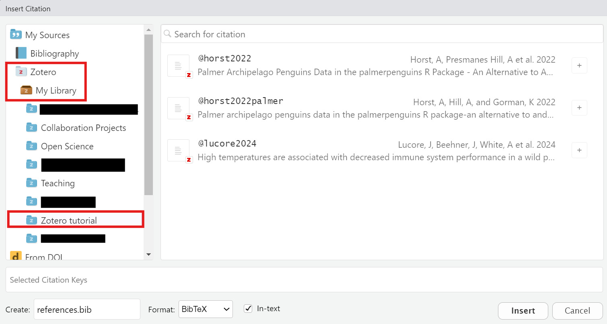
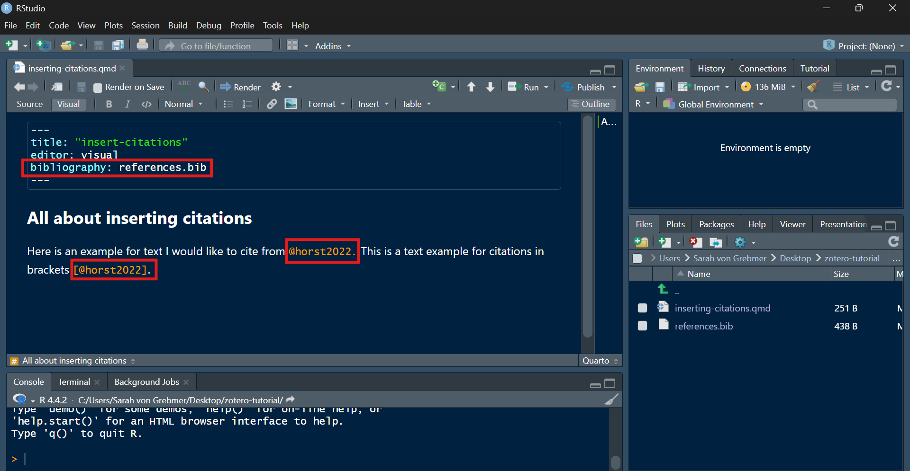
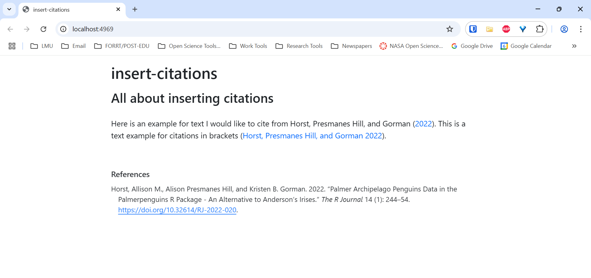

Citations in Quarto
The instructions on this page largely rely on the use of RStudio. If you are not using RStudio, you should note that whatever text editor you are using may not have the same functionality, and you may need to adjust your workflow accordingly. That said, these instructions also cover text-only editing options that should be viable approaches to editing your document via any text editor.
One of the benefits of using RStudio is that it will automatically generate a bibliography file for you when you insert a citation. This bibliography file will be automatically updated to include any new citations you add, and it will automatically generate the bibliography in the format you specify in the YAML of your file.
For other text editors, you must first generate your bibliography file, and then manually add the bibliography to the project directory and the yaml header of your file. You will also need to manually update the bibliography file to include any new citations you add.
If you choose to stick with a different text editor, you can check out the Tutorial: Authoring Quarto documentation page for more information.
Inserting Citations
To insert an in-line citation in your document, you will need to use the source’s “citation key” which is a unique identifier for each reference in your Zotero library. This citation key connects your citation to the correct entry in the references.bib file.
The citation keys generated by RStudio typically follow the format @authorYear or @authorYearLetter when there are multiple matches, but they can be customized to your liking. If you export a library from Zotero, however, a different default method for generating the citation keys will be used. These differences will be discussed in the following sub-sections, RStudio Visual Editor and Manual Entry.
You can insert a citation in your document by using the @ symbol followed by the citation key of the reference you want to cite. For example, I have saved the Zotero Quick Start guide to my Zotero library for this tutorial, and in order to to cite this guide, I would use the citation key [@zotero] in my document:
“Items can be assigned tags. Tags are named by the user. An item can be assigned as many tags as is needed.”[@zotero]
This will insert a citation in your document that looks like this:
“Items can be assigned tags. Tags are named by the user. An item can be assigned as many tags as is needed.”(Zotero, n.d.)
Note that the citation key can be inserted in two ways: with or without brackets [], which yield formatting differences. A citation without brackets, @zotero, will appear inline as “Zotero (n.d.)”, while a citation with brackets, [@zotero], will appear as “(Zotero, n.d.)”.
The citation keys used in RStudio use Pandoc citation syntax. You can find more information on Pandoc citation syntax in the Pandoc documentation on citations and citation syntax.
RStudio Visual Editor
If you are using RStudio’s visual editor, you can insert a citation by clicking on the “Insert” menu at the top of the screen and selecting “Citation.” This will open a dialog box where you can search for the reference you want to cite by typing in the author’s name, title, or other identifying information. Once you have found the reference you want to cite, you can click on it to insert the citation into your document.

@zotero-guide. Note that citation key changes must be done the first time you include a new citation and you cannot have spaces in the name. Press Insert when done.

bibliography: references.bib text to the yaml header. RStudio will either create or update the references.bib file for you.
Manual Entry
(Under construction)
- Export your bibliography from Zotero as a BibTex file
- Save this file in your project directory
- Add the following to your YAML header:
bibliography: references.bib - Manually add the citation keys to your document. These can be found in the BibTex file you exported from Zotero as the first line for each entry. Note that the default keys are different than what RStudio generates.
Adding a Bibliography
As mentioned in the previous instructions for inserting citations, RStudio will automatically generate a bibliography file for you when you insert a citation. This bibliography file will be automatically updated to include any new citations you add, and you must define the bibliography file to use for your document(s) using the bibliography: <your-references-file.bib> line in the YAML header like below.
RStudio will generate a file named references.bib by default if you have not already created a bibliography file. You can change the name of this file to whatever you like, but you must ensure that the name of the file you specify in the YAML header matches the name of the file you have saved in your project directory.
---
title: "My Document"
bibliography: references.bib
---Adding References at the End of the Document
After inserting your citations, you presumably will want a well-formatted bibliography or references section available at the end of your document. “By default, Pandoc will automatically generate a list of works cited and place it in the document if the style calls for it. It will be placed in a div with the id refs if one exists. (Quarto Team, n.d.):”
### References
::: {#refs}
:::This will generate a “References” section at the end of your document with the bibliography formatted according to the citation style you have specified in the YAML header. An example of this can be found at the bottom of this page!
Changing Citation Style
The Citation Style Language page talked in depth about the different citation styles available to you. You can change the citation style of your document by adding the csl: <your-csl-file.csl> line to the YAML header like below:
---
title: "My Document"
bibliography: references.bib
csl: your-csl-file.csl
---This will change the citation style of your document to the style specified in the CSL file you provide. You can find CSL files for different citation styles on the Citation Styles Library website.
Note that the csl: field can also be a link directly to a CSL file online. For example, the following YAML header will use the Nature citation style:
---
title: "My Document"
bibliography: references.bib
csl: https://www.zotero.org/styles/nature
---A Note on Updating Citations in Zotero
A current shortcoming with inserting citations into Quarto documents is that the bibliography does not automatically update when you update the references in Zotero.
That is, if you make changes to the citations within Zotero, you may need to delete the references.bib file and reinsert the citations to force update the bibliography in your project. This sounds a bit complicated, but simply deleting the references.bib file and reinserting a single citation will prompt RStudio to regenerate the references.bib file with the updated references.
An issue requesting that the bibliography automatically update when references are updated in Zotero was previosuly opened in the RStudio GitHub repository, but it was closed without being addressed. you can find the issue here. you can, however, comment that you’d like to see this feature implemented in the future ;).